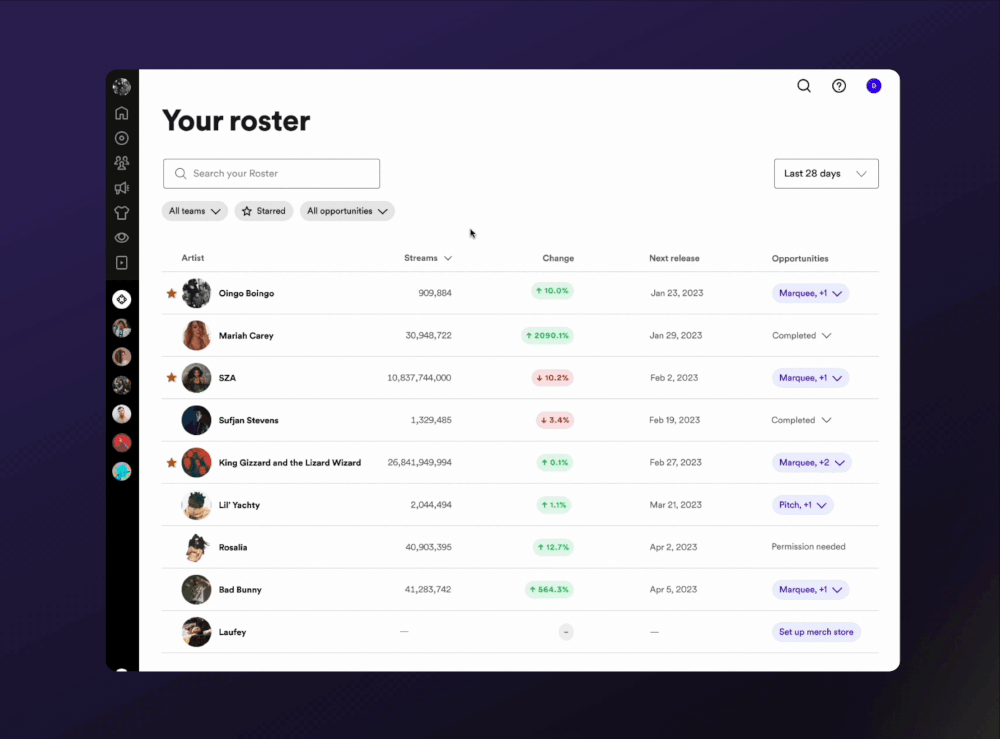
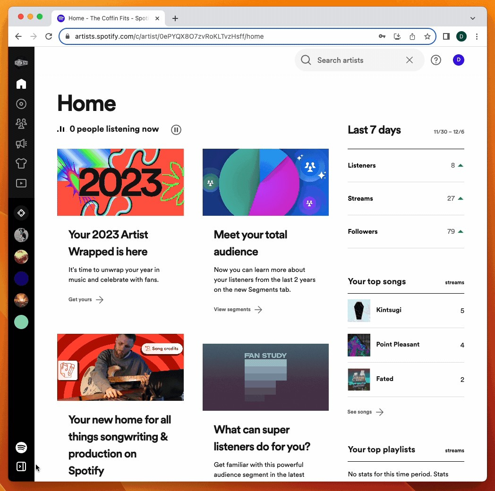
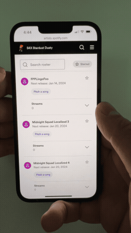

My Role
The only designer in the room
I was the lead designer — and only designer — working alongside a Sr. PM, data scientist, UX writer, and engineering team.
We will get to the fact that every artist's homepage looks identical in another project in this portfolio. 😉
Problem
Managing a roster shouldn't require a spreadsheet
For labels overseeing multiple artists, staying on top of all outstanding tasks across their roster was an immense undertaking. In Spotify for Artists, customers had to click into each artist individually, then drill several layers deep to understand what tasks needed to be done.
Getting a global sense of catalogue performance was nonexistent. If you manage 150 artists, you'd have to drill into each individual analytics page to see how they're performing. As a result, customers resorted to custom Excel spreadsheets, Kanban boards, and to-do lists to manage their work within the platform. That workaround existed because the platform simply didn't give them a better option.

Where I Took Over
A page nobody knew existed
The multi-artist feature on Spotify for Artists was extremely basic. It included an unsearchable list of artists, their next release, and the ability to pitch a song to editorial playlists. No performance understanding, no additional actions, no way to easily find artists. Some of these labels have literally thousands of artists, so the page was effectively useless — and the engagement data reflected that. In qualitative testing, multiple customers didn't even know the page existed.

"We [managers] love data, but currently there is no great way of seeing it beyond the artist level. I work with 45 artists. It's a chore."
— Manager at a medium-sized label
Gaining Understanding
Talking to everyone from indie managers to major labels
Without a strong existing multi-artist experience to build from, our first step was talking to customers who actually manage multiple artists. This ranged from individuals at small labels overseeing about 10 artists to people at major labels with over 10,000 — though they didn't directly manage all of them, they still wanted visibility.
Across the board, regardless of size, customers wanted the same things:
- An easy way to find any artist on their team
- Basic performance metrics at a glance
- A way to flag which artists were most important to them
- A way to see which opportunities were available to act on
Customers at major labels also wanted:
- An easy way to drill into a specific sub-label (for example, as a worker at UMG, I only want to see artists belonging to Republic Records)
- The ability to filter to a specific opportunity — since larger orgs tend to have specialists doing one type of task across many artists, rather than generalists doing everything for a few
New Roster
Built from the workflow up
Every feature in the new Roster came from obsessively understanding how multi-artist customers actually work. Nothing was added speculatively.
- Search. Groundbreaking.
- Performance metrics. Streams, listeners, followers, saves, and playlist adds — with the ability to set a hero metric based on what the customer wants to focus on.
- Percentage change column. Understand how metrics are shifting over a configurable timeframe.
- Timeframe filter.
- Favorites. Star up to 100 artists for a quick view into the ones you care about most.
- Opportunities action menu. Shows available actions an artist can take and which have already been completed.
- Sort by opportunity. Show me only artists that haven't set up their merch store yet.
- Filter by team. I work at UMG, but I just want to see artists belonging to Republic Records.
Roster on Mobile
Tables on a small screen — done right
Tables on mobile can get tricky when you're trying to surface a lot of information. But many label customers and managers are constantly on the go — on tour, traveling with artists — so this wasn't optional. I advocated for it.
The key was understanding what to accentuate on mobile for usability and efficiency. Hearing directly from label customers about their on-the-road workflows shaped those decisions. The mobile experience gives prominence to search and the favorites filter, so even customers managing rosters of 10,000+ can quickly find and act on the artists they care about.

Impact of the Roster Redesign
The results were astounding
The implementation of Roster was one of the most successful launches in Spotify for Artists history.
Next Steps
Roster as the new landing page
With Roster being such a widespread success, the next step is running an experiment for customers managing 10 or more artists where Roster becomes their default landing page. In one-on-one conversations, it became clear this was something customers genuinely wanted — and an obvious home for anyone juggling a roster of artists the moment they log in.